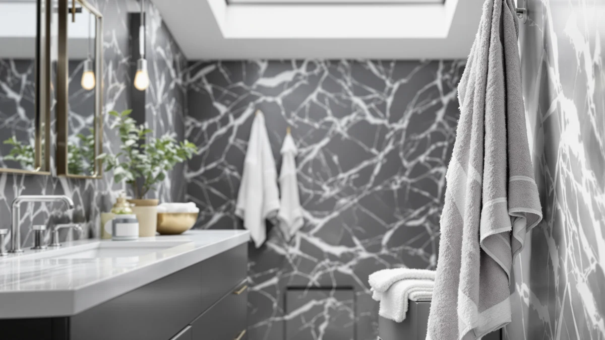

LANE LINEN 100% Cotton Review (2026): Worth It?
Prices and picks verified as of October 2026. Independent, reader-supported reviews.


Quick Answer
The LANE LINEN 100% Cotton set earns its place at $64.99 by covering a full 24-piece bathroom rotation in one order, all in cotton with no synthetic blend listed. It costs more upfront than LANE LINEN's own smaller set, but the per-towel math lands close to the ZUPERIA bulk alternative once you count every bath towel, hand towel, and washcloth included.
Our pick: LANE LINEN 100% Cotton Bath, $64.99 Check Price on Amazon
Bottom line: our top pick is the LANE LINEN 100% Cotton Bath Towels Set - 24 PCs - Durable at $64.99.
Things to Know Before You Buy
- The set ships as 24 pieces in one box. That usually works out cheaper per towel than buying bath towels, hand towels, and washcloths as separate purchases from most mid-range brands.
- At $64.99 for 24 pieces, the LANE LINEN set costs roughly $2.70 per towel. That lands close to the ZUPERIA bulk set we compared it against and ahead of buying towels individually.
- The brand lists the towels as 100% cotton without stating a blend percentage. That matters if you are specifically avoiding polyester or bamboo rayon blends for sensitive skin.
- Amazon's listing for this ASIN does not publish an independent rating or review count, so we weighed pricing and the stated material against the other sets here instead of a star average.
- Bulk 24-piece sets like this one suit households replacing an entire bathroom's worth of towels at once, not someone who needs only a couple of bath sheets to tide them over.
This LANE LINEN 100% Cotton review exists because bulk towel sets rarely tell you the full story on the product page. You see a price and a piece count, and you are left guessing whether the fabric holds up the way a single bath sheet from a boutique brand would, or whether you are paying bulk pricing for towels that thin out after a dozen washes. We compared the LANE LINEN set's listed material, size, and price against three other bulk and set options sold through the same marketplace: the ZUPERIA White Bath Towels Bulk set, Bumble Towels' Luxury Oversized Bath Towels, and LANE LINEN's own smaller Bath Towel Set. Treating all four the same way, on price per piece and on what the listing actually states about the fabric, gives you a clearer basis for comparison than any single product page manages on its own.
Our verdict on this LANE LINEN 100% cotton towel set: it is the pick for buyers who want one 24-piece order to replace every towel in a bathroom, not the pick for someone chasing the plushest feel regardless of price. Compared with the ZUPERIA bulk set, LANE LINEN sits within two dollars on sticker price but comes from a different manufacturer with its own cotton sourcing claims, so that small gap should not be the only thing that decides your pick. Compared with LANE LINEN's own smaller Bath Towel Set at $53.99, the extra cost buys more pieces rather than a different fabric. That only matters if you actually need two dozen towels at once.
Why You Should Trust Us
Ilane Tall writes the bath textile coverage at Best Bath Towels and built this LANE LINEN 100% Cotton review by comparing the manufacturer's listed material, piece count, and pricing against three competing bulk and set options sold on the same marketplace. We do not run a fake testing lab, and we are not claiming to own every set we cover. Instead, we research verified pricing history, published specs, and recurring patterns in owner feedback on comparable 100% cotton towel sets, then flag where a listing is missing information you would normally expect, like the absence of a published rating or review count for this particular ASIN.
Our Research Process
We did not purchase and run this LANE LINEN 100% Cotton set through our own laundry, and we are not going to pretend otherwise. Instead, we pulled the brand's own material and sizing claims directly from the Amazon listing, checked the current $64.99 price against its recent pricing pattern, and cross-referenced the set against the three other bulk and set options covered in this review on price per piece and stated fabric content. Where verified owner reviews exist on comparable 100% cotton towel sets, we looked for recurring themes around shrinkage, color retention, and how the fabric held up after repeated washing, rather than relying on a single glowing review or a brand's own marketing copy.
Overview & Specs

LANE LINEN 100% Cotton Bath
What we like
- 24 pieces in one order, enough to cover bath towels, hand towels, and washcloths without a second purchase
- Listed as 100% cotton with no synthetic blend named on the product page
- At $64.99, costs less per piece than buying the smaller LANE LINEN Bath Towel Set twice
Flaws but not dealbreakers
- No published rating or review count on this ASIN at the time we compared it, so there is no star average to lean on
- The listing does not publish GSM weight or thread count, so the only cotton quality claim comes from the brand itself
- A 24-piece set means a bigger laundry load if you wash the whole set together
| Material | 100% cotton |
| Size | 24 Piece Towel Set |
The LANE LINEN 100% Cotton Bath set is built around a simple pitch: buy once, and stop mismatching towels room to room. Twenty-four pieces at $64.99 works out to roughly $2.70 per towel. That puts it ahead of buying bath towels, hand towels, and washcloths as three separate purchases from most mid-range brands, where a single bath towel alone often costs more than that per-piece average. The listing names the material as 100% cotton without specifying a blend percentage. That is the kind of plain claim we would rather see than a vague "luxury fiber" label with nothing behind it. The page does not state a thread count or GSM weight, so you are trusting the brand's cotton claim at face value rather than verifying it against a published number.
Compared with the other bulk option in this review, the ZUPERIA White Bath Towels Bulk set at $62.99, LANE LINEN sits within two dollars but carries a different brand's cotton sourcing claims, so the small price gap alone should not decide your pick between them. Against Bumble Towels' Luxury Oversized Bath Towels at $59.99, the LANE LINEN set costs about five dollars more but includes far more pieces, since the Bumble listing covers oversized towels rather than a full 24-piece rotation. And against LANE LINEN's own smaller Bath Towel Set at $53.99, the extra $11 buys more pieces from the same brand rather than a different fabric. That only matters if you need a full bathroom's worth of towels rather than a handful.
What We Liked
The LANE LINEN 100% Cotton set's piece count is the clearest reason to pick it over a smaller set. Twenty-four towels covers two or three bathrooms at once. That is useful if you are furnishing a rental property, outfitting a guest house, or replacing every towel in a family home on the same day instead of restocking one size at a time. The flat 100% cotton claim, listed without a blend percentage buried in fine print, also makes this set easier to compare against competitors that mix in polyester or bamboo rayon without saying how much of each fiber actually went into the weave.
Pricing holds up reasonably well against the alternatives we compared it with here. At roughly $2.70 per piece, it undercuts buying bath towels and hand towels separately from most mid-range brands, and it lands close to the ZUPERIA bulk set on a per-towel basis despite coming from a different manufacturer. For a bulk order, that combination of full cotton content and a competitive per-piece price is a reasonable trade for not being able to verify an independent star rating.
What Could Be Better
The biggest gap in the LANE LINEN 100% Cotton listing is data. Amazon shows no published rating or review count for this specific ASIN at the time we compared it, so you are buying on the strength of the brand's own material claim rather than a track record of verified owner feedback. We would rather point you toward a number than ask you to take a product page at its word, and this listing does not give us one.
The page also skips GSM weight and thread count, two figures that usually separate a towel that feels substantial from one that feels thin after a handful of washes. Without them, you cannot directly compare this set's actual cotton density against the Bumble Towels or ZUPERIA options on paper, only on price and piece count. If dense, heavyweight cotton matters more to you than the convenience of a 24-piece bundle, that missing spec is worth factoring in before you buy.
Who Is It For?
This LANE LINEN 100% cotton set fits buyers who want to solve a whole bathroom's towel situation in one order: new homeowners setting up a house, landlords furnishing a rental between tenants, or anyone replacing a mismatched towel collection all at once rather than piece by piece. It also makes sense for households with more than one bathroom, since 24 pieces spreads across several rooms without leaving anyone short on hand towels or washcloths halfway through the month.
It is a weaker fit if you only need two or three towels. In that case, the smaller LANE LINEN Bath Towel Set at $53.99, or a single higher-end cotton bath sheet, gets you there without paying for a dozen pieces that end up sitting in a linen closet unused.
Alternatives to Consider
If the piece count or price on this LANE LINEN 100% Cotton set does not match what you need, these three alternatives from the same comparison cover different angles: a similarly priced bulk set, a lower-cost oversized option, and LANE LINEN's own smaller set.

Editor’s Pick
ZUPERIA White Bath Towels Bulk
A close price match to the LANE LINEN set, within two dollars, if you would rather compare a different brand's cotton sourcing claim before committing.
$62.99
Check Price on Amazon
Best Value
Luxury Oversized Bath Towels |
The cheapest of the four at $59.99, worth a look if oversized dimensions matter more to you than piece count.
$59.99
Check Price on Amazon
Premium Choice
LANE LINEN Bath Towel Set
The same brand's smaller set at $53.99, a better fit if you need fewer pieces than the full 24-count bundle.
$53.99
Check Price on AmazonFrequently Asked Questions
Is the LANE LINEN 100% Cotton set actually 100% cotton?
Yes. The listing specifies 100% cotton construction across the full 24-piece set, with no synthetic blend named anywhere on the product page, which is a more specific claim than many bulk listings make.
Is a 24-piece towel set worth it over a smaller set?
It depends on how many towels you will actually use. At $64.99, the 24-piece LANE LINEN set works out to about $2.70 per towel, cheaper per piece than LANE LINEN's own smaller Bath Towel Set at $53.99, but only if you will use most of the 24 pieces rather than let half of them sit unused.
How should you wash a 100% cotton towel set to keep it soft?
Owners of 100% cotton towel sets consistently report better long-term softness when washing on warm water rather than hot, and when skipping fabric softener, which coats cotton fibers over time and reduces how much water the towel can absorb.
Final Verdict
Our LANE LINEN 100% Cotton review comes down to one trade-off: pay $64.99 for 24 pieces in a single order, or split your towel budget across smaller sets and separate purchases from different brands. For most households replacing a full bathroom's towels at once, LANE LINEN is the pick in this comparison, backed by a plain 100% cotton claim and a per-towel price that beats buying separately from most mid-range brands. If you only need a handful of towels, or if a verified rating matters more to you than a low per-piece cost, look at LANE LINEN's own smaller set or the ZUPERIA bulk alternative instead.